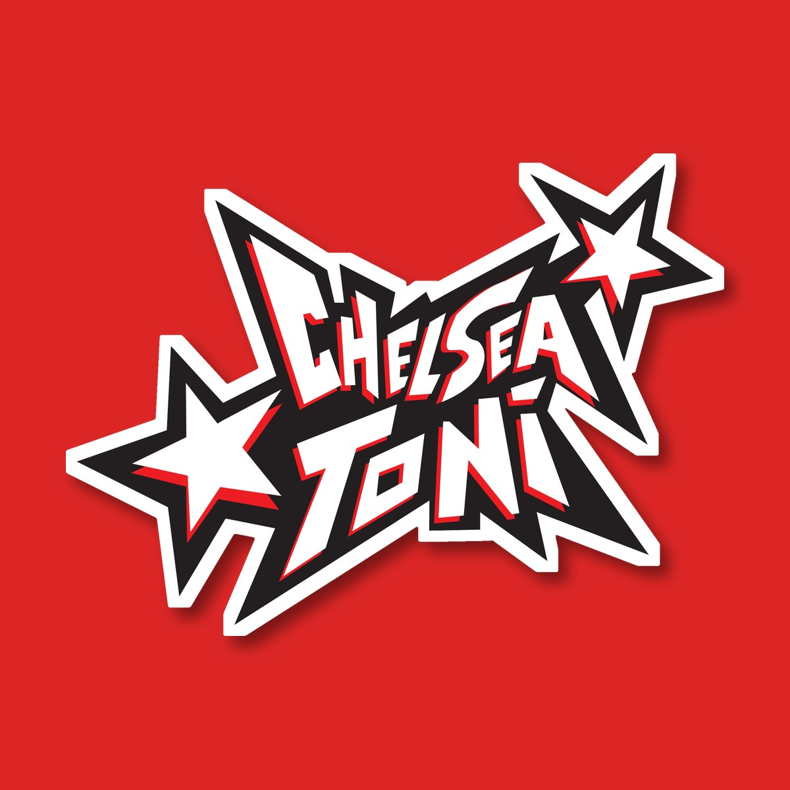
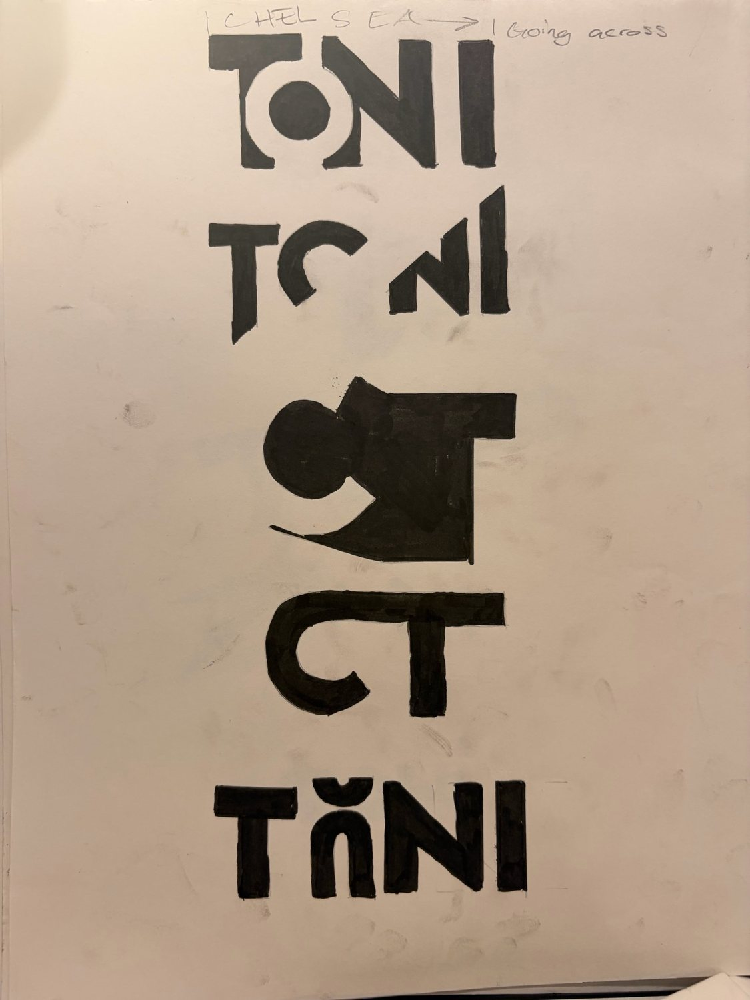
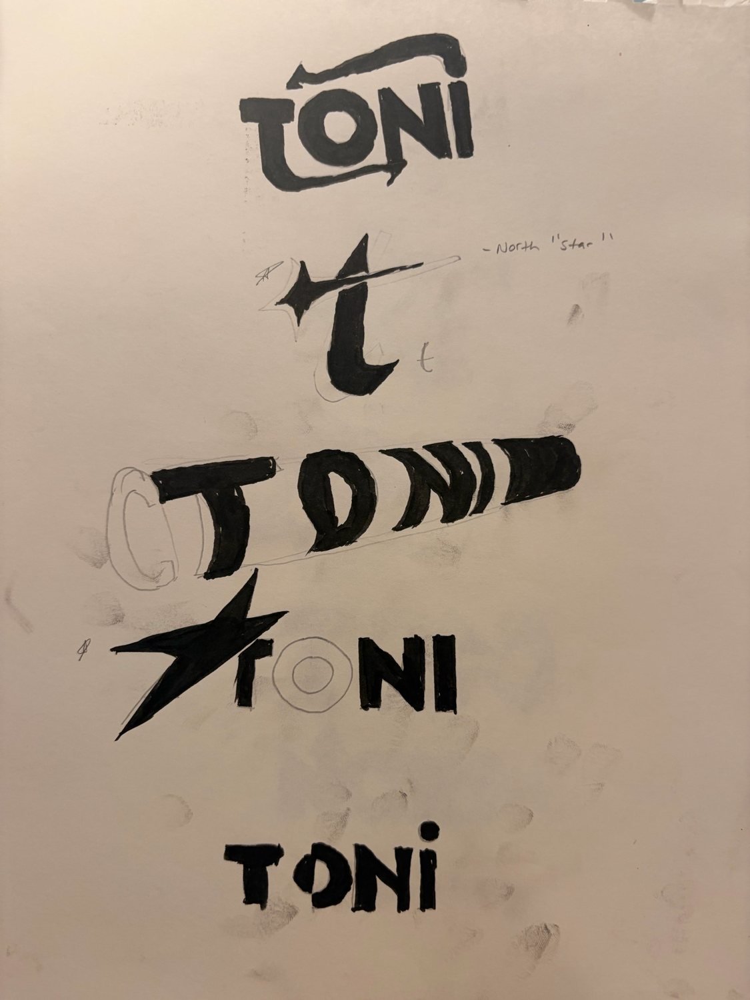
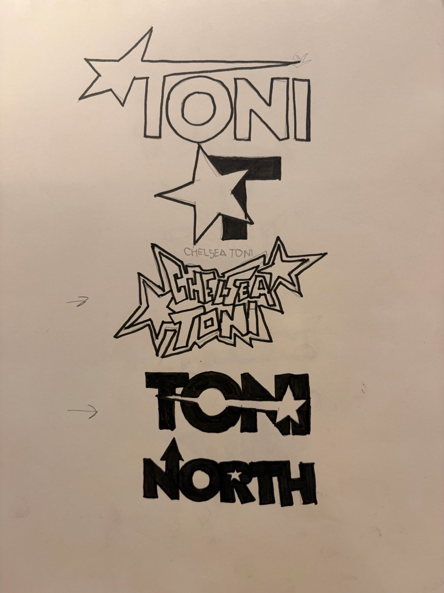
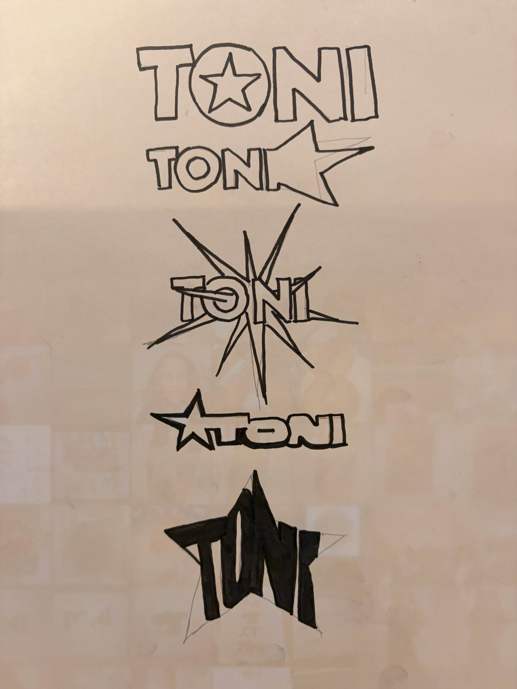
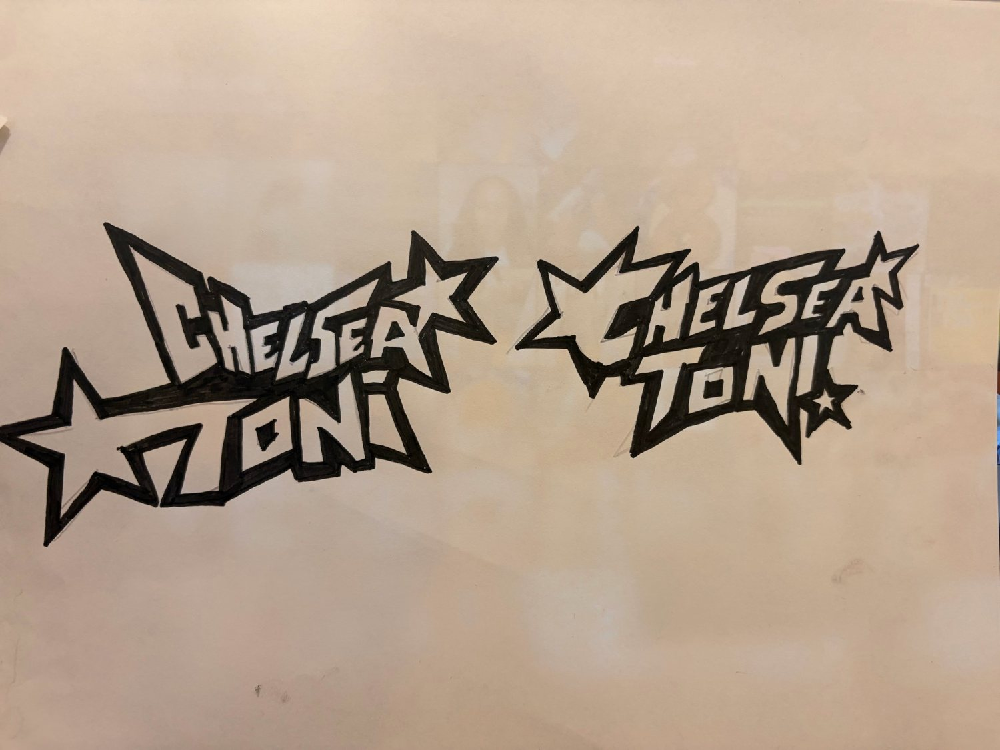
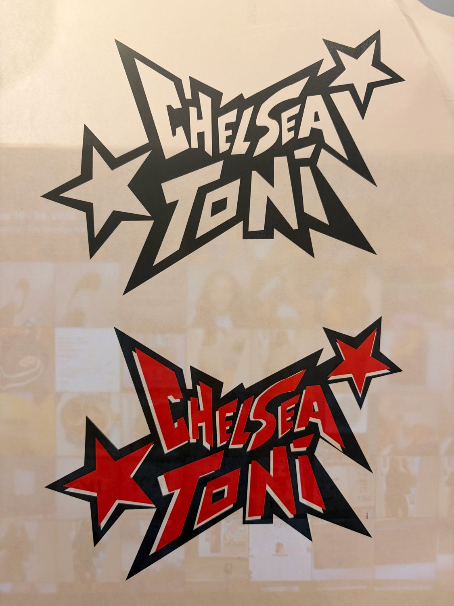
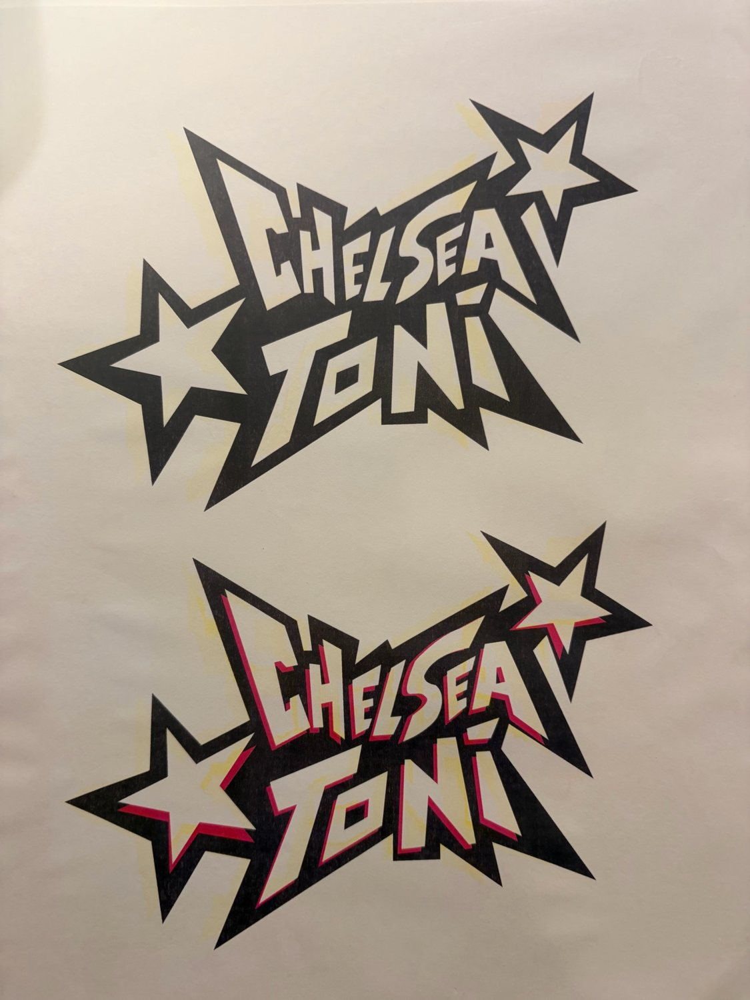

Identity design · Personal brand
My logo
My process for creating a logo for my personal brand. It started as pages of marker sketches and was refined by hand before being redrawn as a vector using Adobe Illustrator.
01 Sketching
I started with focusing on how Toni or CT would look. My initial idea was a logo with bold, blocky letters. I then tried stars, arrows, a burst and even my last name, “North”, before choosing the full "Chelsea Toni."




02 Finalizing the design and color
The strongest idea was the full name stacked inside a edgy shape, as it showed personality and represented my work better than the static "Toni" designs. I inked two versions by hand, chose one, then advanced it in Adobe Illustrator.


03 The final logo
The final version is white lettering with a red shadow inside a black outline. It became the logo on my website! I presented it as a sticker that peels off the page when you hover over itand sticks into the navigation as you scroll.

Sketched by hand in marker, finished in Adobe Illustrator.